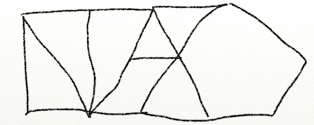

43. The Early Years#
The first few things I can remember in my life that seem to relate to meditation are two memories from the time I was approximately three years old. I can date most of my memories, including those from my early childhood, to the specific places in which they occurred, as my family moved around a lot. The first memory is of standing by a bed of flowers outside our rented house in a little suburb outside of Boston and suddenly having this extremely strong impression that I should be able to know all the Latin names for all those flowers and the other plants in the yard, and realizing that I had forgotten them. It was nerve-wracking, as it felt like that knowledge had been there in the past, and I realized I couldn’t access it, as though it was slipping or fading away. Past life experience? Some other fanciful ideation in the mind of a young child? Hard to say for sure, but I had the distinct impression that Latin plant classification was something that at some point in the past I had done very, very well, and I can still recall distinctly exactly where I was and what that moment and the frustration of those fading memories felt like at that time.
The second memory is from around the same time. I was lying on my parents’ bed downstairs on their white down comforter and began tuning in to the sensations of breathing and feeling bliss flood my body. Gradually, this turned into a very wonderful, silent, neutral peace with a specific all-pervading feeling-tone. I also had the distinct memory just then that I had done this before. I am quite sure that was the last time for decades that I consciously dropped into those states, though I don’t know why I quit accessing them.
Some twenty-two years later, while on retreat in Bodh Gaya with Christopher Titmuss and his fine crew, and just shortly after experiencing stream entry, I would shift to doing jhana practice just to see if I could, and wham, the jhanas showed up in order from the first through the eighth. When it was over, there was the strong recognition: “Ah ha! Those states I got into when I was three or four years old that I vividly remember were the first four jhanas!” Those who didn’t get into jhanas when they were young or at least don’t remember this may think it unlikely that I got into those states, but it turns out that in detailed conversations with various seasoned meditators it is not so uncommon for kids to be able to do this, and then lose the ability as they get older, possibly to rediscover it again some time later.
This has made me speculate that it might be easy to teach kids the jhanas, and that, with practice, they might be able to retain these from childhood through periods when they would come in handy, such as adolescence and into adulthood. There are many things that I have some residual resentment about, among the biggest of which is being brought up in a world where meditative technology and theory were not well-established, mainstream, or widely incorporated into standard daily life and especially education.
When I was around seven or eight, my mother often used to play an album called Free To Be You and Me by Marlo Thomas and Friends. Its light, hippie-inspired children’s songs matched the album title perfectly, a message born of the late 1960s that proclaimed you can and should be yourself, who you are, as you are, and the album promoted this as a high ideal. As perfectly natural and easy as this initially sounds, it is not actually that easy an ideal to live up to in practice, as anyone who has tried has figured out. Still, I believe that as a young child, something of that message helped me later to be a better insight practitioner, as being with what is going on and who you actually are right then is a core message of insight practice.
I attended a hippie-run Quaker school from the second through the fourth grade in Durham, North Carolina. Every morning we would all sit in silence for ten minutes. I found this generally very difficult and remember feeling a tremendous restlessness and irritation. We weren’t given any specific technique that I remember. We were just told to sit quietly. Looking back, I think that those daily sessions of silent sitting provided me with a sort of conditioning and training that helped later, though I certainly didn’t appreciate this at the time.
In fourth grade, I remember taking a very cool elective course cleverly called “Close Encounters” that involved all kinds of interesting experiences, such as playing with a nifty analog synthesizer, but the most important parts of that class were the meditations. I remember us all lying on the floor of the class and being given various meditation instructions, such as what is now referred to as “progressive relaxation” where you move your attention gradually from your toes to your head while systematically tensing and relaxing the muscles, and feeling warm light flooding into those relaxed areas until you visualize your whole body filled with yellow light. I also remember a meditation in which we visualized ourselves getting tiny and walking around the inside of our bodies, checking things out, relaxing, and healing any points of tension, then visualizing ourselves growing bigger and bigger until we were as huge as the entire universe. I don’t remember any particularly earth-shattering experiences during those sessions, but I am certain that the class formed the basis of the meditative exercises that I came up with that got me across the A&P later.
One of the next formative events was my introduction to a book called The Dancing Wu Li Masters, by Gary Zukav, during my eighth-grade science class, taught by Mr. Smith. The book is part of the first wave of books that tie together particle physics, quantum mechanics, and Eastern philosophy and mysticism. I read the book cover to cover many times. It not only was fascinating from a science geek point of view, but it clearly pointed out profound discrepancies between how materialist science explains the world and how humans perceive it.
These discrepancies rankled me profoundly. It seemed extremely hypocritical of me to actively believe that I was some separate, static, in-control person when physics clearly showed that I was a totally fluxing field of naturally resolving probability fields. Obviously, these are strange thoughts for a young teenager. Those seeds that were planted would begin to bloom shortly in my home-brewed dream practice, later becoming the foundation of heated debates in college, and would continue to haunt me until 2003, when Buddhist meditation practices gave me a way to finally resolve this paradigm-perception conflict.
The Arising and Passing Away
I began having lucid dreams and flying dreams when I was probably about five years old (this again is dated by the house in Raleigh, North Carolina, that I lived in then). I vividly remember my first flying dream ever, in which I suddenly could swim up into the air. The feeling was amazing, and I instantly became a huge fan of those dreams. This, combined with the instructions I received in my fourth-grade course, seems to form the basis of what happened when I was about fourteen or fifteen years old (again, I know this by the house that we had moved to). I remember lying in bed one night, thinking, “Wow, I want to have more flying dreams! Maybe if I practice having them before I go to sleep I will have more of them!”
So, before going to sleep, I began playing around with visualizing flying around in space between large planets that looked more like fifty-foot-wide billiard balls of different colors—red, white, black, etc. I don’t know if you have ever tried to visualize things clearly, but if you have and you are like most people, you likely found out what I did: visualization is hard to do, at least if you are trying to evoke a lifelike image. There are all sorts of subtleties and complexities. There seemed to be a slight and annoying delay between the intention to visualize and the images showing up. There were strange perceptual distortions. As I made the effort to visualize, the tension in my face was distracting and seemed to make it harder to get deeper into the visualization. The more effort I made, the more attention was taken up by the effort rather than by the flying itself, but relaxing too much made the visualization fade. There was an alternating between the side that seemed to be visualizing and the images themselves, which messed up the images.
I went through a phase where my hands seemed to feel big and my lips and face felt big (something I would later learn is called “the homunculus”, which relates to the way that the brain maps physical sensations, and it turns out it is a first jhana territory thing). At points and for brief periods, the visualization got very clear, though not so clear as a full out-of-body experience, but moderately passable as the experience of actually practicing flying between visualized planets, like a very strong daydream. At other points, it was very frustrating and tense. In short, I managed to get through the first three insight stages and had no idea I had done so.
What happened next would totally change my life in profound ways. But given that I had no vocabulary or conceptual framework to characterize what happened, this unforgettable experience got placed in a mental file of experiences that were completely outside anything that seemed to relate to the rest of my life, except that it totally did relate to the rest of my life, but in ways that I wouldn’t begin to understand until I was twenty-five years old and meditating in a monastery in Malaysia. While the United States often thinks of itself as the world leader in nearly all technologies, I can tell you for certain that we are at least 2,500 years behind when it comes to meditative technologies and their taxonomy.
Back to my quest, which wasn’t a quest yet. I remember this very lucid dream I had a few nights into my flying-dream practice like it was yesterday. In the dream, I was standing on a long, straight, dusty road lined with large, wild rose bushes. The actual street that I was dreaming I was on is called Cobblestone Place, and it is in Cannondale, Connecticut, just behind a house that used to belong to my grandmother, in case you are curious. In real life, those rose bushes were planted by my late uncle Alan, and the road is not that long, but in the dream it was. It is also the road on which I would first learn to drive a car a year or two later.
In the dream, I was about three feet tall, wearing a silver space suit with a glass-globe helmet, and standing next to me were two similarly dressed, similarly short people, all staring into the distance down the road. We were all holding silver ray-guns in our hands. The sun was beating down so brightly that the landscape and colors were washed out in that brightness, with everything hued somewhere between white and yellow with a tinge of light green. Everything was quiet. We were waiting, it seems, for something, but I had no idea what.
Far down the road appeared a cloud of grey dust, and suddenly emerging from that dust cloud was a huge black horse ridden by a huge witch dressed in black. She pulled out a wand and pointed it at us, and a blinding bolt of white light flew from the wand and my entire world exploded into fragments flying around the room where I had been sleeping, as at this point it makes sense to me to think of myself as awake, just totally blown apart with my body flying around the room in something like sparks, glowing shards, or fireworks. Everything calmed down, the world seemed to reconstitute, and I was lying in my bed hyper-alert and buzzing all over.
Somewhere around that same time—though again, I can’t be exactly sure of the sequence as I didn’t know the maps—I had my first strong out-of-body experience. I remember lying there in bed, floating up out of my body, looking around the room and down at my body, starting to drift through the wall, then snapping back into my body like I was pulled by a spring. After that there was a powerful buzzing, like my body was all shaken up, followed by a feeling of paralysis, and after maybe five to ten seconds, I could move again and was awake and had integrated back into my body. This was the first of many such experiences, and I continue occasionally to have out of body travels at times, though not as frequently as I did back then.
I am going to add something else in here whose temporal aspects are harder to place. I went on a series of five-day, fifty-plus-mile hikes with the Boy Scouts every year from age ten to eighteen starting the day after Christmas and finishing up on New Year’s Eve. We would hike between eight and twenty-one miles each day with full packs, carrying everything we needed except water, which would be provided at the campsite (generally, except when something went wrong). That is a long way to hike while carrying a lot of weight, particularly when I was at the younger end of that range, and it was tough.
It also gave my mind very little to do except pay close attention, to the work involved in every footstep of those hours upon hours of hiking, to the pain in my feet, hips, and shoulders from my boots and the pack, to how to get through it. I remember noticing a few different shifts into different modes of relating to what was going on, places where my steps got sort of jerky, which I am sure now, upon reflection, were Cause and Effect, places where my shoulders got asymmetrically tense and my posture got strangely skewed to one side, which I am sure now was Three Characteristics, and places where I am certain now that I was in some very altered states that I can’t really classify well from this distant vantage point. This makes me wonder how many soldiers have crossed into insight territory while on long marches and how much of PTSD-related disability and suicides are in some ways related to Dark Night territory arising along with the horrible circumstances of war. Exactly what experiences occurred during those hikes is unclear, as the long trails through the forests of North Carolina don’t give me enough reference points to determine that. Still, I think those hikes served as a sort of walking meditation and endurance training that helped with my practice later.
What happened after I crossed the A&P the first time is hard to sort out. I was an adolescent, in junior high, and a total geek. My family had some structural issues and dysfunction that impacted my basic happiness. Those were hard times. I can’t from this vantage point sort out exactly what was just hormones and the awkwardness of that phase of life, what were the stressors of that set of transitions from childhood to adulthood, what related to the challenges of junior high school and the fact that kids are cruel at times, what related to what was going on in my family at that time, and what might have been the effects of crossing the A&P. I knew I felt different, but that was not particularly new. I was generally pretty angry, but that wasn’t particularly new either.
I felt somehow outside what was going on, like what was going on was a distraction from something much more real, but what that “much more real” was I had no idea. Paradoxically, I also felt totally trapped in a life that felt like it was profoundly wrong in most ways, like it had some deep fundamental flaw at its core and I was trying to avoid drowning in it. I can remember many nights after that first A&P event lying there in my bed, drawing on every ounce of strength my little adolescent being possessed, to try to keep it together and get through the night, as free-floating feelings of horror and misery coursed through me out of proportion to circumstances that, while bad, still didn’t warrant that degree of emotional agony. Later passes through the A&P and their tendency to reignite these challenging feelings would begin to reveal the pattern of Dark Night following amazing insights that I would come to know so very well.
I wonder if I didn’t cross the A&P somewhere earlier in my life but I can’t remember it. I say this because of the following odd bit of data: between the ages of about eleven and seventeen, whenever I signed my name, particularly on school papers, I would add the following symbol beneath my name:
{kind=link}
This symbol contains the letters for “NIVAZO” squished together and stylized into a sigil. On the rare occasions when someone asked me what it meant, I would reply, “Buddhist heaven is called nirvana. It is a place of bliss, peace, and connection. Nivazo is my word for Buddhist hell, a place of chaos and total disconnection.” I had no idea that the real Buddhist term was samsara. So, not knowing that, I apparently felt I needed to give my experience, which involved an acute sense of chaos and disconnection, a name, and so NIVAZO it was. From my current perspective, I consider that very unusual bit of precocious insight to be suggestive of some sort of Dark Night process. Anyway, it is interesting how, in retrospect, we try to make sense of our early lives, to fit the mysterious actions of a child into the simple boxes that an adult can understand.